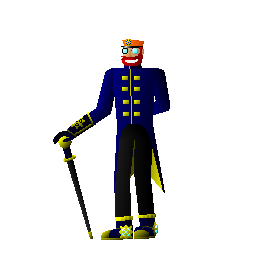

Pravidlá a vlastonsti serverov
- 1. Dodržovať slušný chat - Hrozí chat ban na 1 hodinu - 1 týždeň
- 2. Označovanie pozemkov - Každý hráč si môže označiť svoj priestor v móde FTB Chunks
- 3. Klient módy - Každý si môže nainštalovať klient módy, ak to niesú hacky - Hrozí trvalý ban
- 4. Teleportovanie - Na každom z modpackov sa dá používať teleportovanie cez Journey Map
- 5. Užívajte si hru!

Kontakt na Adminov
Pokiaľ chcete niekoho nahlásiť tak kliknite na Kontakt, na päte stránky.